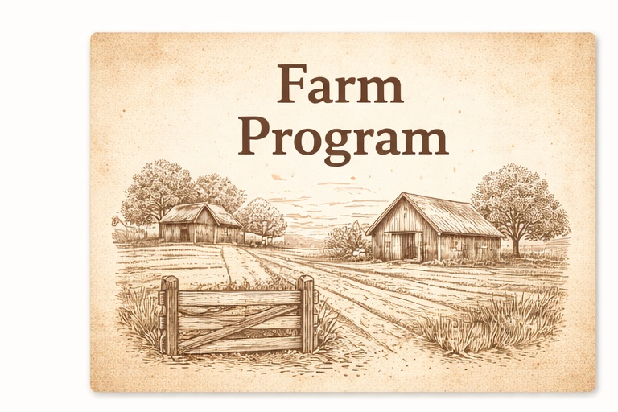
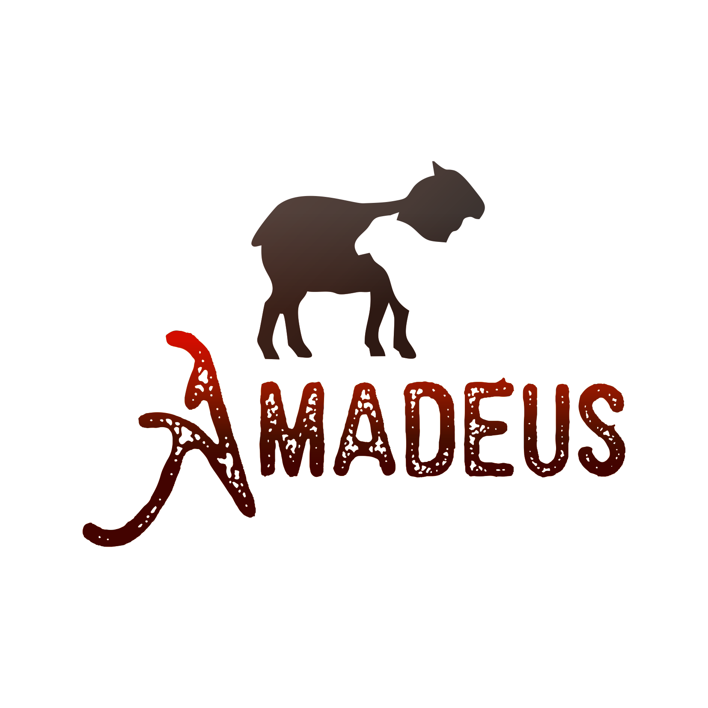
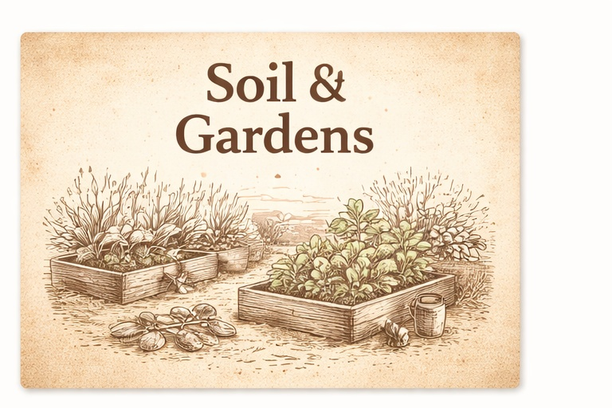
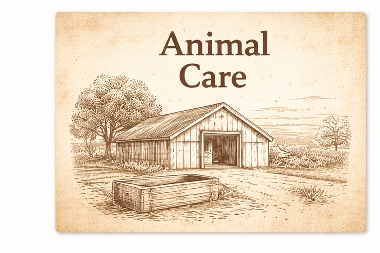
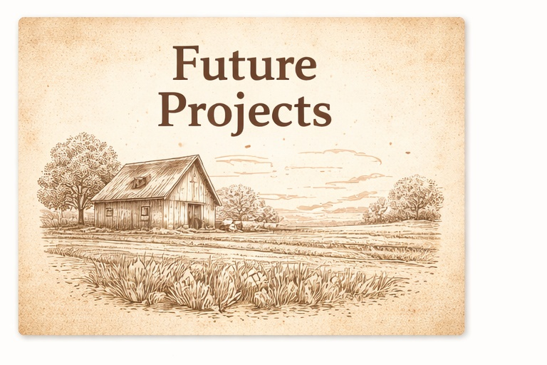

Program
Livestock & Land Stewardship
How we care for animals, improve the land, and build practical systems that get better each season.
Learn more→

A simple overview of what we do today, and what we’re building towards — focused on care, sustainability, and honest progress.




Family-run • Western Cape • Long-term sustainability focus
Amadeus Farm is our family’s long-term project: improve the land, care for animals properly, and build systems that reduce waste and strengthen resilience over time.
We’re honest about where we are today — we still use purchased feed while we expand gardens and pasture development. What we grow on the farm is produced without synthetic chemical inputs, using our own natural liquid fertiliser and LAB cultures.
Our focus stays consistent:
For enquiries and support, use the website chat or email us directly.
Website:
Email: sales@amadeusfarm.co.za
Location: Western Cape, near Riversdale, South Africa
Messaging is used for general enquiries and customer support. We do not operate an automated marketplace or public catalog for live animals via messaging.
Our approach is practical and step-by-step: animal care first, then steady land improvement. We focus on clean shelters, calm handling, and building systems that reduce waste over time.
If you have questions about the farm, our practices, or general enquiries, start a chat and we’ll help.
We’re growing more from the land over time. What we do on-farm is supported with natural practices, including our own natural liquid fertiliser and LAB cultures.
The goal is to improve soil health and increase what the farm can sustainably produce, season by season.
Day-to-day animal care is the foundation: clean bedding, dry shelters, good airflow, and practical routines. We aim for calm animals and consistent standards.
If you’re contacting us about the farm, start the website chat and we’ll assist.